Ein Terrarium entsteht
Hallo! Ich baue mir ein Terrarium für eine Kornnatter und möchte euch daran teilhaben lassen. In diesem Blog ist alles
möglichst genau dokumentiert und mit Bildern ausgeschmückt. An dieser Stelle möchte ich schon einmal die teils schlechte
Bildqualität entschuldigen, da mein Handy teilweise nicht richtig scharf gestellt hat.
Nachdem ich mich hinreichend informiert habe über die Bedürfnisse und Platzbedarf einer Kornnatter geht es los.
Als erstes stellt sich die Frage nach der Größe des Terrariums. Da ich schon einen Unterschrank gezimmert habe auf dem
das Terrarium ruhen soll ist die Abmessung der Grundfläche einfach vorgegeben. Diese beträgt ungefähr 900 x 500. Für eine adulte
Kornnatter ist das relativ eng, daher möchte ich den Raum nach oben so gut es geht ausnutzen. Meine angestrebte Höhe beträgt ca. 1m.
Nach dem exakten Ausmessen des Unterschranks habe ich mittels CATIA, einem CAD-Programm, einfach mal die Hülle für das Terrarium konstruiert.
Die Höhe der unteren Front beträgt 50 mm, da der Bodengrund nicht höher kommt. Die obere Frontplatte habe ich zunächst nach Optik ausgelegt.
Später habe ich diese jedoch so hoch gestaltet, dass die Lampen und Elektronik vollständig versteckt sind.
Meine Belüftung befindet sich unten links an der Seitenwand, da ich keine Lust habe von vorne direkt darauf zu gucken. die Abluft kann oben rechts aus dem
Deckel entweichen, da rechts vom Terrarium ein großer Schrank bündig mit dem Terrarium abschließt. Die Lampen werden ebenfalls oben rechts angebracht,
somit ergibt sich ein Temperaturgefälle von links unten (kalt) nach rechts oben (warm).

Als Grundmaterial benutze ich 18 mm OSB-Platten, die ich mir im Baumarkt kostenlos zuschneiden ließ.
Hierbei ist zu empfehlen nicht direkt Zuschnitt zu kaufen, sondern einfach Verlege-OSB-Platten mit Nut und Feder,
und sich dort Nut und Feder wegschneiden zu lassen. Das ist deutlich preiswerter. Als Frontblenden verwende ich Kiefer Leimholzplatten,
da sich das gut in mein Zimmer einpasst.
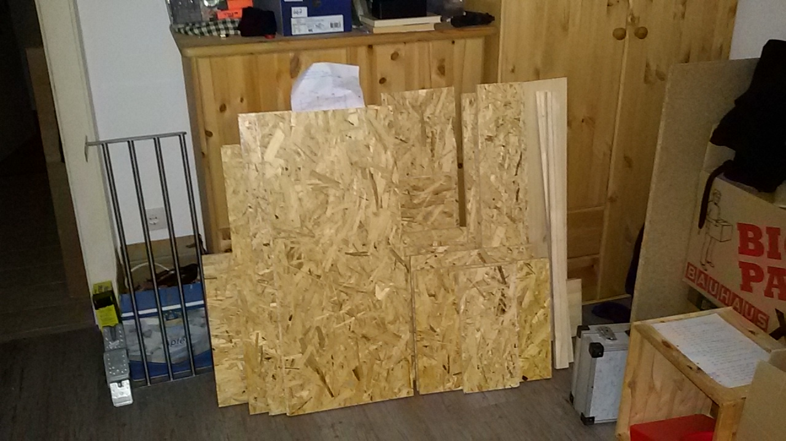
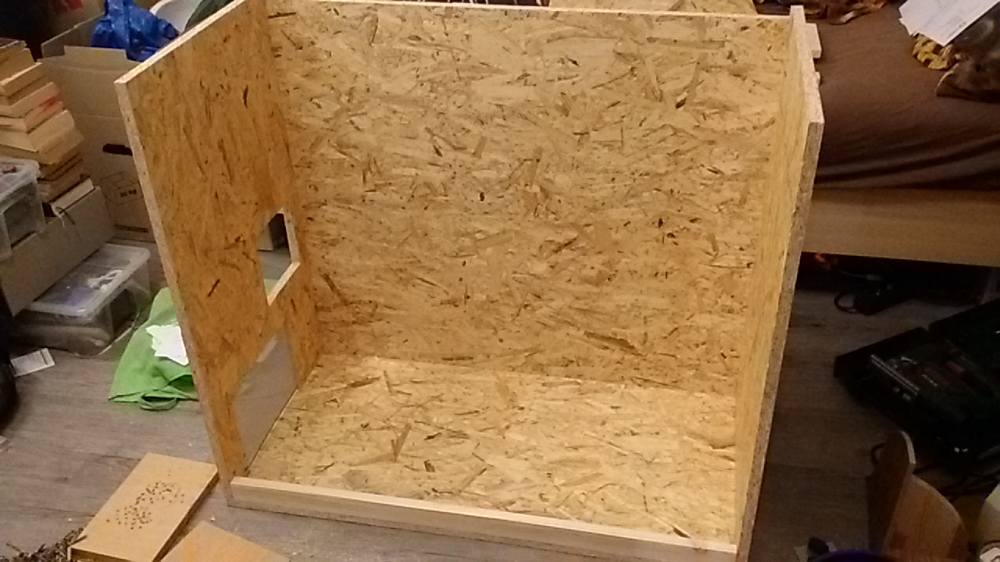
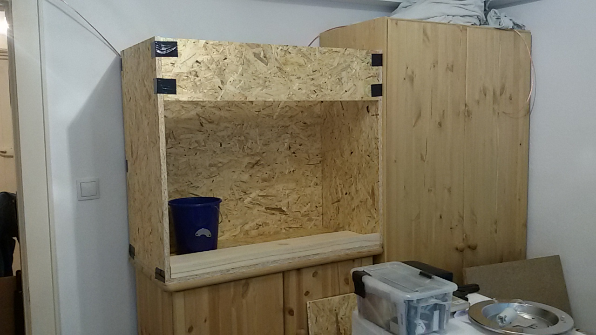
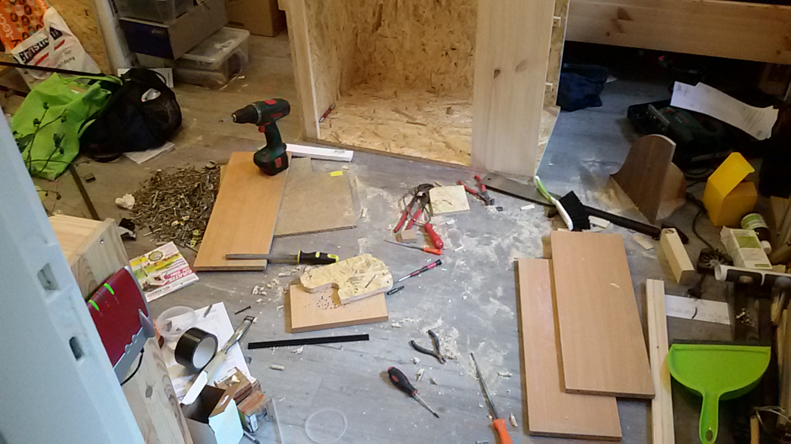
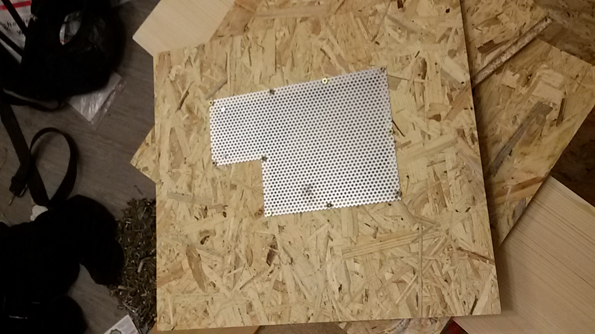
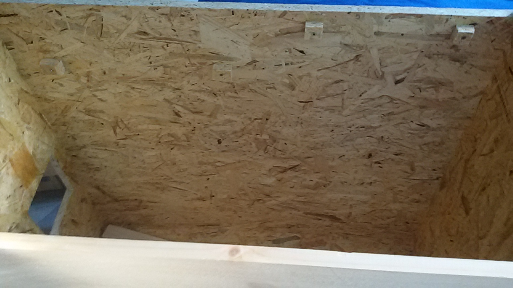

Eine Besonderheit des Terrariums ist die bodenebene Seitenklappe links unten, in die auch die Lüftung integriert ist.
Sie besteht aus einem Holzrahmen auf den eine Lochrasterplatte geschraubt wurde. An der Unterkante sind zwei
Schrankschlösser eingebaut, um die Klappe fest zu verschließen. Auf die Oberkante wird Klavierband geschraubt.
Die Klappe dient in erster Linie dem Wasserwechsel, da direkt hinter ihr das Trinkwasserbehältnis stehen wird.
Damit muss nicht jedesmal eine der beiden großen Glasfronten aufgeschoben werden, was nicht nur hohen Wärmeverlust
sondern auch Stress für die Schlange bedeutet. Außerdem erweist sich die Klappe als äußerst praktisch bei der Grundreinigung des Terrariums, da sich an dieser Stelle keine Kante
befindet und somit der Terrariumsinhalt einfach hier herausgefegt werden kann. Schon beim Bau war das sehr hilfreich.


Die Rückwand wird aus Styroporplatten ausgeschnitten, welche ich dann mit Styroporkleber zusammenklebe.
Anschließend trage ich diverse Schichten Fliesenkleber auf, bringe ein bisschen Farbe ins Spiel und versiegel alles abschließend mit
mattem Klarlack.
Bevor ich nun das richtige Styropor zuschneide habe ich zunächst einmal mit Pappe im Terrarium Vorsprünge und Liegeplätze,
sowie die Höhle provisorisch aufgebaut, um einen Eindruck über die Dimensionen zu bekommen. Danach habe ich erneut CATIA bemüht und die gesamte Rückwand als
grobes Schichtmodell basierend auf dem Pappekonstrukt modelliert. Somit weiß ich beim Zuschnitt der Styroporplatten ungefähr wo Rundungen, Aussparungen
oder Etwaiges hinkommt.
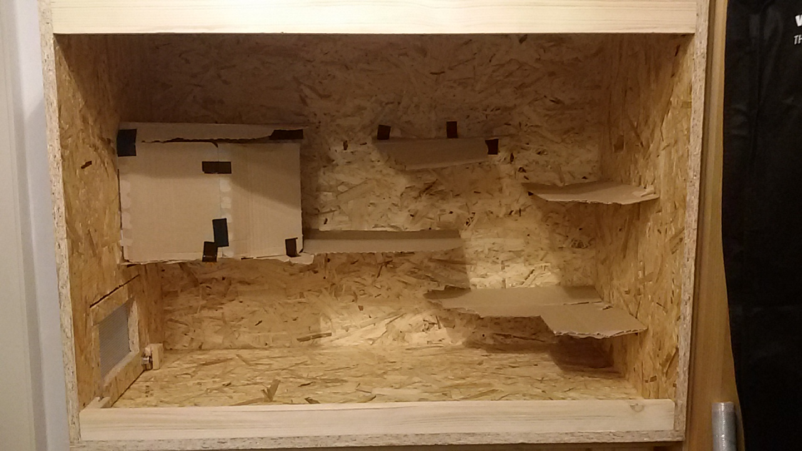


Von unten angefangen schneide ich mit einem Kattamesser die zuvor auf das Styropor gezeichnete Kontur aus. Die Kontur
zeichne ich grob von der CATIA Konstruktion ab. Das mache ich mit allen ca 30 Schichten. Ich lege die jeweils geschnittene Schicht
immer direkt in das Terrarium um die Maße (vorallem die Breite) zu überprüfen und gegebenenfalls zu korrigieren. Beim modellieren habe ich
auch direkt Möglichkeiten eingearbeitet einen Blumentopf oder ähnliches zu versenken. Damit steht später nicht irgendwo
ein hässlicher Blumentopf auf einem Vorsprung, sondern die Pflanze wächst scheinbar aus dem Vorsprung heraus. Diese Löcher, als auch die Höhle
arbeite ich erst nachdem die Außenkontur fertig ausgeschnitten ist heraus. Anschließend werden alle Schichten so angepasst, dass keine scharfen Übergänge oder
Kanten stehen bleiben und viele Sachen abgerundet. Dazu ist es sehr sinnvoll noch nichts verklebt zu haben, da man diese Arbeit mit einzelnen
Schichten viel leichter machen kann als auf der gesamten Rückwand. Da ich ja sowieso gerade dabei war Styropor zu schneiden habe ich mir auch
einen eigenen Trinknapf und ein paar Teststücke für später zugeschnitten.


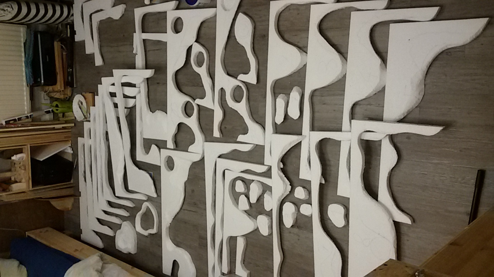
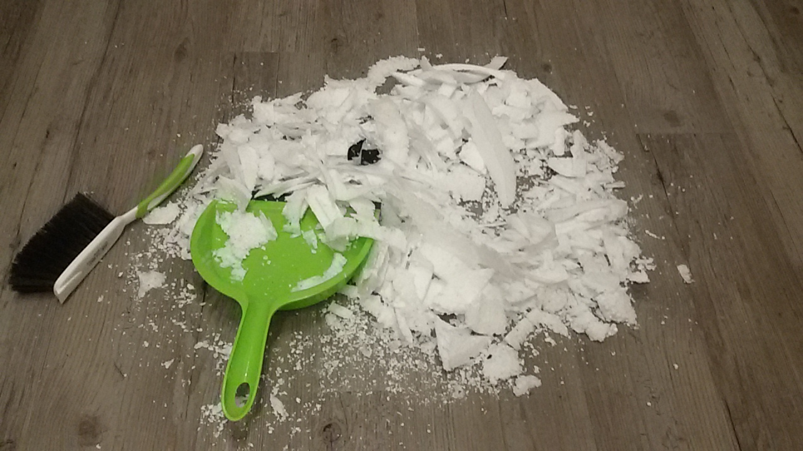
Eine weitere Besonderheit des Terrariums ist die Höhle, die direkt in die Rückwand integriert werden soll. Ich erhoffe mir davon eine
natürlichere Optik und ein insgesamt runderes Aussehen. Außerdem mag ich die Herausforderung. Schwierig daran ist, dass die Höhle
auch leicht zu reinigen sein muss und falls sich die Schlange hierhin zurückzieht muss ich sie eventuell auch da herausbekommen
ohne zu großen Stress oder gar Verletzungen für die Schlange. Im Optimalfall kann man sogar irgendwie bei Bedarf
in die Höhle hereinschauen. Meine Lösung hierfür ist eine weitere Öffnung auf der linken Seite, da diese die einzige ist, die mir
zugänglich ist. Da dort ja aber auch die Reinigungsklappe ist muss die Höhle zwangsläufig in die Höhe ausweichen, da beides nebeneinander
nicht passt. Die Öffnung kann mit einem 150 x 200 Fallglas verschlossen werden welches irgendwie schwarz eingefärbt wird,
damit es in der Höhle dunkel ist.


Nach akribischem Entfernen aller Styroporkügelchen von den Zuschnitten und aus dem Terrarium habe ich alle Schichten zusammengeklebt.
Damit ich nicht durcheinander komme habe ich schon beim Ausschneiden alle Schichten nummeriert. Damit apäter auch alles passt habe ich das direkt im Terrarium gemacht.
Zu beachten ist, dass der Kleber nicht auf Flächen aufgetragen wird, wo auf der nächsten Schicht gar kein Styropor mehr ist durch Überhänge etc.
Nach dem Kleben geht es an die Feinarbeit. Die Gesamtoberfläche habe ich mit Feile und Messer weiter bearbeitet, bis ich mit der Oberfläche
und groben Struktur zufrieden war. Ich empfehle hierzu stark einen Mundschutz egal welcher Art. Anfangs hatte ich noch keinen, jedoch nachdem ich
ein umherfliegendes Styroporkügelchen eingeatmet habe und ein weiteres verschluckt habe ich umgehend eine Atemmaske angezogen (ein Tuch tut es auch).
Das Reinigen danach ist ein echt großer Aufwand, aber das Ergebnis lässt sich sehen.
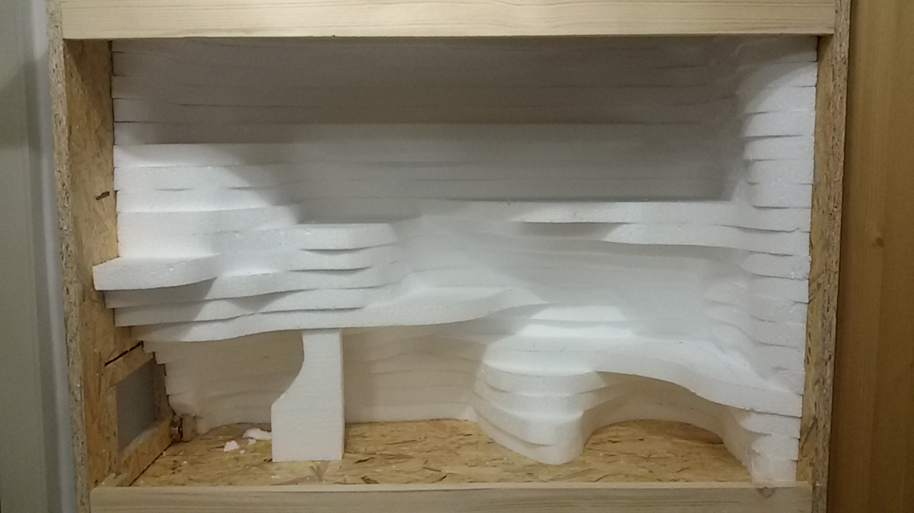


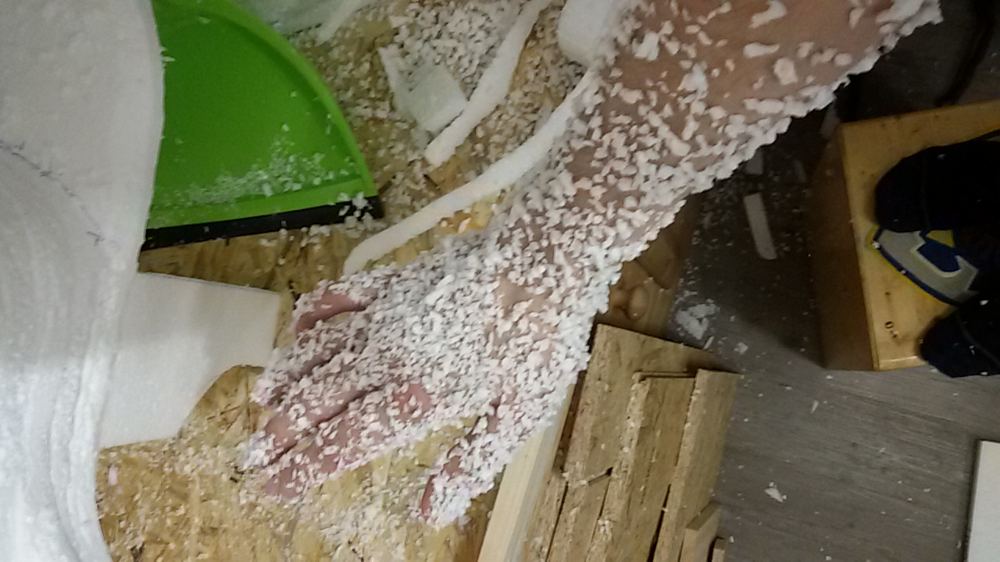
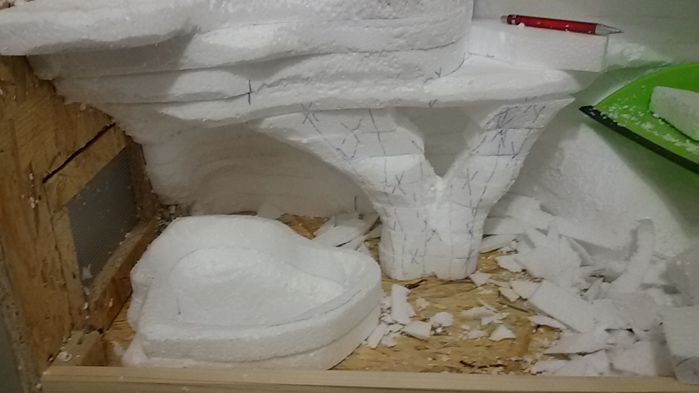
Die gesamte Rückwand habe ich nachdem sie getrocknet war aus dem Terrarium herausgeholt.
Für die Temperatur- und Luftfeuchtigkeitssensoren habe ich passende Löcher gebohrt und einen Strohhalm durchgesteckt,
damit ich sie später mit dem Fliesenkleber nicht wieder verschließe. In die Rückseite der Rückwand habe ich ausgehend von den Bohrungen Kanäle
zur Oberkante geschlitzt in denen die Kabel später laufen können. Außerdem habe ich ein Rohr in die Höhle verlegt, mit welchem Nebel in das
Terrarium geblasen werden kann um die Luftfeuchtigkeit zu erhöhen.
Einer der Strahler im Gitter ist aktuell noch ein 75W Elstein Strahler, mit dem ich die Temperatur steuere. Er wird ausschließlich bei unterschreiten
von Grenztemperaturen eingeschaltet und bringt das Terrarium wieder auf die nötige Grundtemperatur. Dazu kommt ein 75W Basket Spot, der zum einen für die
Grundtemperatur zuständig ist, zum anderen Licht gerichtet ins Terrarium bringt und somit eine tolle Stimmung erzeugt. Später habe ich noch eine 25W
Vollspektrum Tageslichtlampe auf die linke Seite eingebaut, damit die Pflanzen besser wachsen. Alle Strahler sind in spezielle Karamikfassungen (Achtung!
Keine Plastikfassungen verwenden, bei Elstein Strahlern schon gar nicht!) eingeschraubt. Verkabelt sind diese dann mit speziellem Wärmeresistentem Kabel.
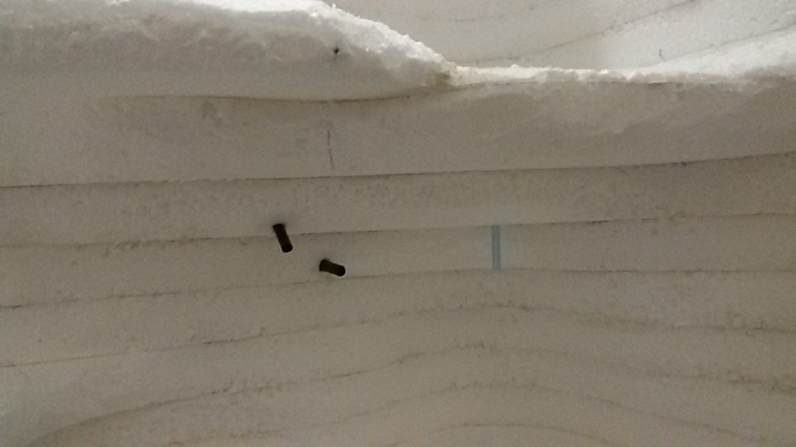
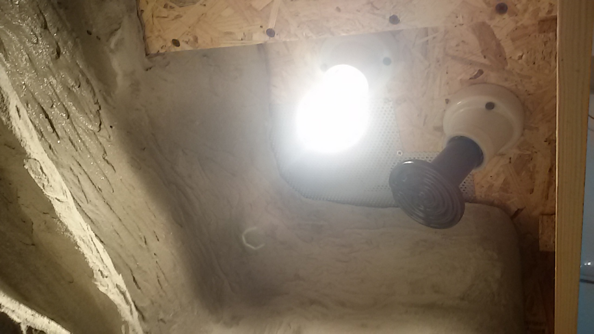


Beim Fliesenkleberkauf gibt es nicht viel zu beachten, man kann ruhig billigen nehmen, der ist oft nur etwas körniger, was in meinem Fall ja sogar gewünscht ist.
Wichtig ist nur, dass es "Flex" Kleber ist, da dieser nicht so schnell reißt. Im Terrarium herrschen ja große Temperaturschwankungen. Angerührt habe ich den
Kleber nach Gefühl und gewünschter Viskosität. Insgesamt habe ich 3-4 Schichten Fliesenkleber aufgetragen. Die erste Schicht habe ich sehr dünn angerührt
um erst einmal Kontakt zum Styropor herzustellen. Aufgetragen habe ich die Schicht mit einem großen Pinsel, der aber nicht wirklich als Pinsel sondern mehr als
Kelle arbeitete. Darum habe ich die nächsten Schichten direkt mit der Hand (und natürlich Handschuhen) aufgetragen. Diese waren auch deutlich dicker, sodass ich das Material richtig
auf die Oberfläche auftragen konnte. Latexhandschuhe eignen sich für diese Arbeit hervorragend. Aufpassen musste ich bei den Strohhalmen, da sich um diese herum gerne Material ansammelte, was
später zu vulkanähnlichen Formen unter den Sensoren geführt hätte.
Den Latexhandschuhen habe ich auch die tolle Struktur der letzen Schicht zu verdanken. Sie entsteht wenn man den noch feuchten Fliesenkleber vorsichtig "streichelt".
Dabei haftet der Handschuh partiell an dem Kleber und zieht die Oberfläche mit sich. Zwischen den Schichten empfiehlt es sich mindestens einen Tag besser mehrere zu
warten und sie durchtrocknen zu lassen.
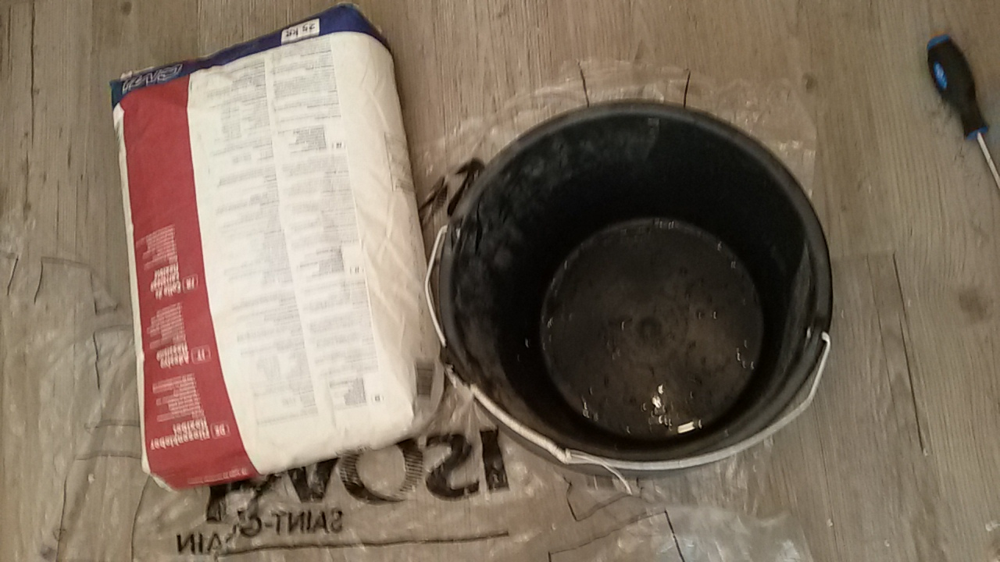


Nachdem der Fliesenkleber getrocknet ist kann die Bemalung beginnen. Hierzu habe ich erneut die Rückwand schon in das Terrarium gehoben, da die Seiten von innen auch ein bisschen Farbe
abbekommen sollen. Als Farben (Abtönfarbe) habe ich Terrakotta, einen Gelbton und eine Flasche Schwarz besorgt. Dafür ist schwarz nur für die Höhle gedacht. Die Farbe habe ich (fast) unverdünnt
mit einem Pinsel aufgetragen. Zunächst einmal habe ich alles in dem Gelbton grundiert, damit später nicht das Grau des Fliesenklebers zu sehr durchscheint. Nach der Trocknung habe ich
gleichzeitig Gelb und Terrakotta aufgetragen, wobei an manchen Stellen (wie Unterseiten von Vorsprüngen o.ä.) terrakotta die dominierende Farbe ist, und bei anderen Gelb. Solange die Farbe noch feucht ist
kann man die Übergänge etwas verwischen und ausarbeiten. Kurz vor vollständiger Trocknung der Farbe habe ich noch Highlight gesetzt und die Struktur des Fliesenklebers herausgehoben. Dazu habe ich einfach die
Hügel mit jeweils der Farbe angemalt, die nicht die Grundfarbe ist. Also auf Gelber Fläche habe ich die Hügel leicht rötlich akzentuiert. Das funktioniert mit der Seitenfläche eines relativ harten Pinsels
indem man quer streicht (obwohl das dem Pinsel nicht guttut) somit berühren die Borsten nicht die tiefer gelegenen Stellen.


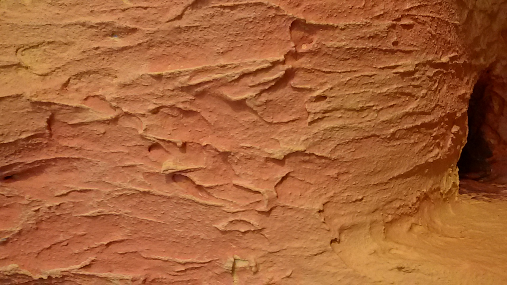
Damit ich die Oberfläche auch abwischen kann habe ich mich dazu entschieden alles am Ende noch einmal mit mattem Klarlack (auf blauen Engel achten, dann ist das lutschfest für Kinder)
zu versiegeln.
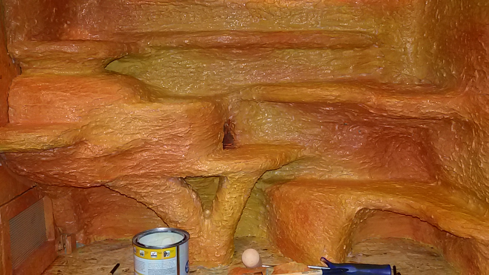

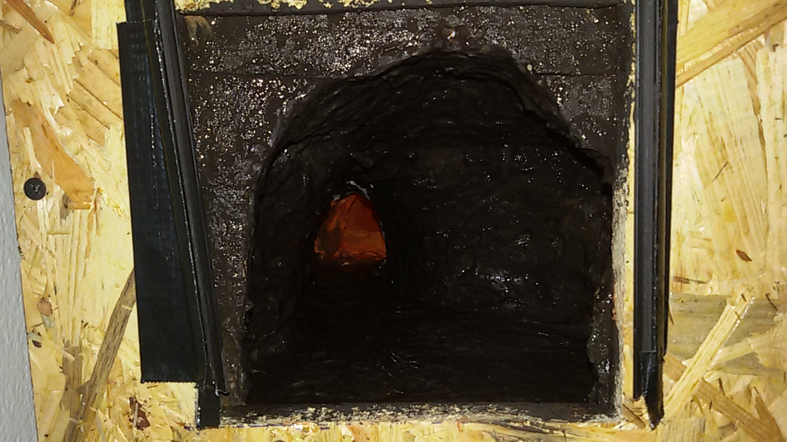
Die Temperatur messe ich einmal auf der rechten, wärmeren Seite direkt unter dem oberen Vorsprung, damit der Sensor im Schatten liegt und ein
zweites mal auf der linken Seite unter der Höhle hinter der Säule um einen kühlen Punkt zu haben und somit das
Temperaturgefälle überprüfen zu können. Die Luftfeuchtigkeitssensoren sind ebenfalls aufgeteilt, einer in der Höhle direkt neben dem Nebeleinlass
und einer auf der rechten Seite neben dem Temperatursensor. Als Sensoren benutze ich DTH11 für die Luftfeuchtigkeit und DS18B20 als Temperatursensor.
Alles lese ich mit meinem Raspberry PI ein.
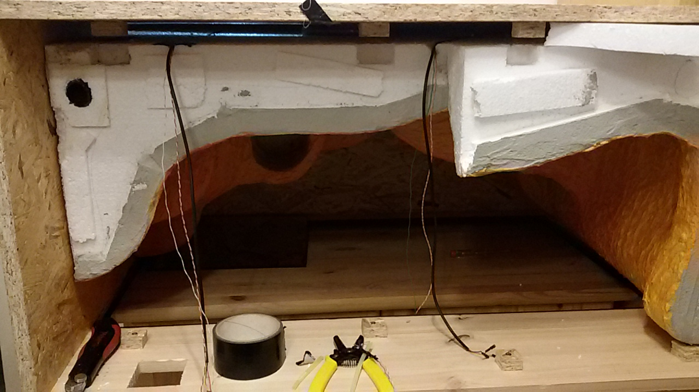
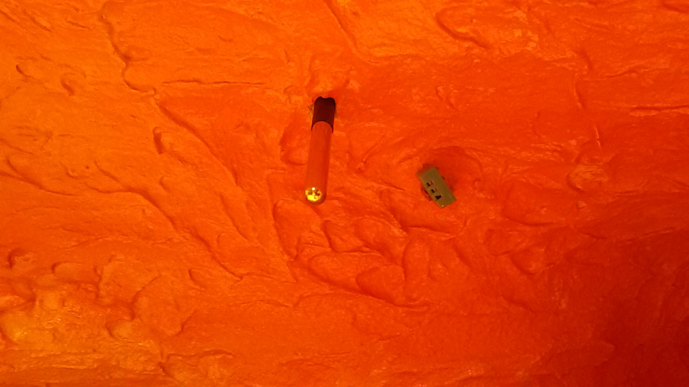
Bei der Gläserei meines Vertrauens (eine preiswerte in meiner Nähe) habe ich meine beiden Front-Glasplatten zuschneiden lassen. Die Kanten habe ich selber
mit hartem Schleifpapier gebrochen. Die 4mm Glasplatten laufen in darauf abgestimmtem Glasführungsprofil, welches ich mit Silikon auf die entsprechenden Kanten
geklebt habe. Links und rechts habe ich auch Glasführungsprofil verbaut, da dort sonst unnötiger Luft- und Wärmeaustausch stattfindet, als auch die Gefahr des
Ausbruchs einer Schange erhöht ist. So habe ich links und rechts eine gute Überlappung. Noch dazu muss ich sagen, dass mein Glaser scheinbar keine perfekten 90°
Winkel messen kann, da die linke Glasplatte oben im Glasführungsprofil anliegt, unten jedoch ein Spalt ist. Wäre also dort nicht das Führungsprofil, so entstünde
ein ca 3mm breiter Spalt zwischen Glasplatte und Terrariumwand.
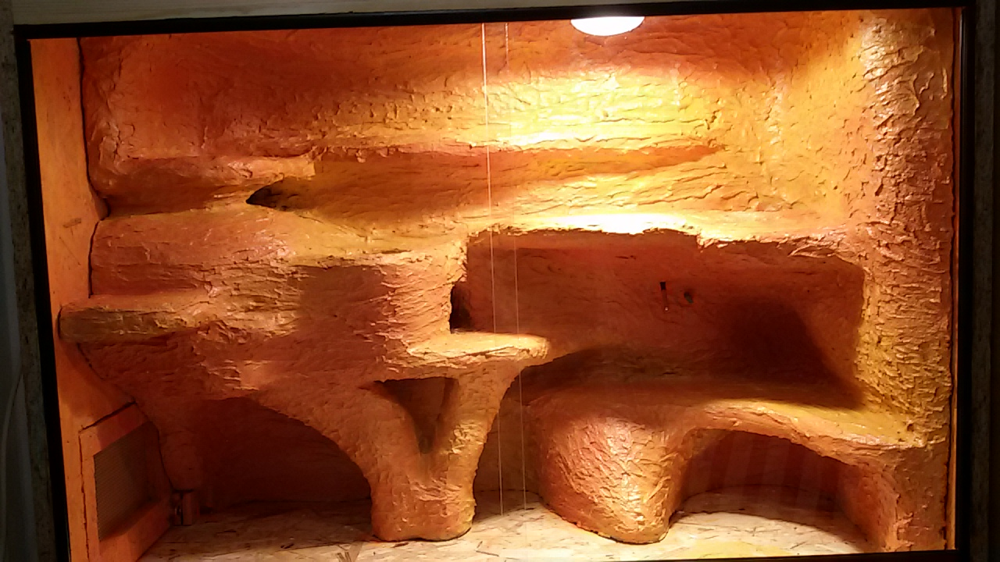
Als Interface zum Bedienen und zum Ablesen nutze ich ein altes Nokia-Display, welches mit dem Raspberry-PI angesteuert wird. Das Display hat
auch eine blaue Hintergrundbeleuchtung, welche ich einschalten kann. Aus einem Stück Holz habe ich eine Fassung für das Display gebaut, welches exakt in die obere
Frontblende eingepasst wurde. Links neben dem Display befinden sich die Buttons, mit welchen ich das Terrarium bedienen kann. Rechts daneben sind 3 Status LEDs in
verschiedenen Farben. Wenn die rote leuchtet, so stimmt die Temperatur im Terrarium nicht und es wird gerade geheizt (oder gekühlt). Leuchtet die grüne, so ist
bald die nächste Fütterung. Die gelbe LED bezieht sich auf die nächste Reinigung des Terrariums. Die Daten wir Luftfeuchtigkeit, Temperatur, nächste Säuberung oder Fütterung
werden mir permanent auf dem Display angezeigt.
Um die Luftfeuchtigkeit zu erhöhen wird der in den Luftkanal eingelassene Ventilator angeschaltet, der den vom Dunsterzeuger produzierten
Nebel durch das Rohr in die Höhle im Terrarium transportiert.
Die Lampen haben aus Gaze noch eine Schutzabdeckung erhalten, welche auf der hinteren und rechten Seite oben Fest am Deckel angebracht ist. Auf der vorderen, als
auch auf der linken Seite wird die Gaze über relativ starkt Magnete am platz gehalten, damit ich z.B. noch einen Lampenwechsel durchführen kann. Die Gaze ist dafür
wichtig, dass sich die Schlange nicht verbrennt, da sowohl die Lampe als auch der Elstein sehr heiß werden. Das wird erst dann zum Problem, wenn es Nachts ist und die Lampen
aus sind. Sollte sich jetzt eine Schlange eine der Strahler als Schlafplatz auserkoren, so kann sie nicht schnell genug weg, sobald diese morgens angeht, da sie (als Kaltblüter)
die nötige Energie nicht in der Geschwindigkeit aufbringen kann ohne sich ernsthafte Verbrennungen zuzuziehen.

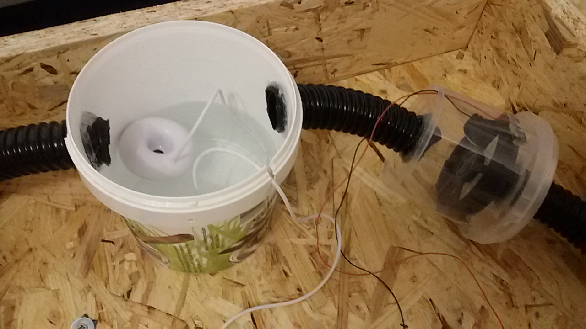


Auf der Terraristika in Hamm am 09.09.2017 habe ich nun nicht nur eine, sondern gleich zwei Kornnattern erstanden. Eine männliche und eine weibliche Abbott Okeetee.


Sollte irgendetwas unklar sein, fehlen oder ähnliches, nehmt gerne Kontakt zu mir auf, einfach unten links auf der Seite auf Kontakt. Ich stehe gerne
für Rückfragen zur Verfügung.